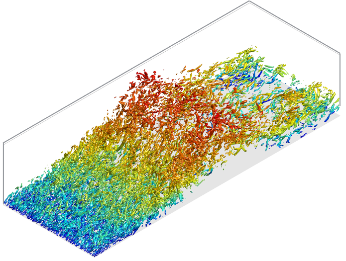

Introduction
In fluid dynamics, turbulence is a chaotic fluid motion that can be seen in various places; volcano plumes, ships, aircraft, and even in a cup of latte. Due to the universality of the problem, it has been studied for decades, but turbulence is still not fully understood. Yet, it is crucial to understand and model turbulence because missing its prediction has a huge impact in engineering. No wonder Richard Feynman described turbulence as the most important unsolved problem in classical physics.
Then what makes understanding turbulence hard? Not only turbulence is very random, chaotic, and complex, it involves such a wide range of scales that it is really difficult to simulate. For instance, the smallest turbulence scales are millimeter scales in the atmospheric flows. If we are trying to capture the smallest scales in turbulent flows (without using any turbulence models), the cost of simulation is so enormous that is almost intractable to simulate in most engineering applications. I spent months running the code (192 threads of Intel Xeon processors) just to simulate one single flow (the snapshot shown below) and even this flow is far from real-world engineering applications like a flow around Tesla Model 3. Therefore, we need turbulence models that captures the effective behavior of the turbulence to make simulations tractable.
So this is what I do. I use high-performance computing and rigorous mathematical theory to simulate and understand the physics of turbulent flows and try to model their effective behavior. My research involves a data-driven understanding of turbulence and my current research interest includes the use of machine learning and information theory in scientific computing. My study has a wide range of impacts from aerospace to naval applications (indeed my research is funded by both aerospace and naval institutions) in a way that it can improve the accuracy and speed of the computational fluid dynamics simulations. My current research includes:
- Understanding effective behavior and modeling turbulence using macroscopic forcing method (MFM)
- Understanding fundamentals of turbulence cascade and its coherent structures
- Studying flow systems in aeronautics and naval applications
Current research interests: turbulence analysis & modeling, two-phase flow, machine learning and data science for scientific computing, high-performance computing

Macroscopic Forcing Method (MFM)
We developed a novel systematic technique called MFM which allows us to calculate the exact Reynolds-average Navier Stokes (RANS) operator and the eddy viscosity used in the turbulence model. We applied MFM to a turbulent channel flow and a separated boundary layer flow. They mimic the wall-attached flows and smooth-body separation often shown in flows around moving objects (aircraft, ships, etc.). Using MFM, we were able to identify the missing pieces in the current turbulence models and we are currently developing a new turbulence model. Also, I did some preliminary MFM-inspired turbulence modeling using NASA 2D wall-mounted hump as part of my Boeing internship. This work is advised under Prof. Ali Mani.
For more technical details (or more cool simulation images):
-
MFM-based Modeling of NASA 2D Wall-Mounted Hump Flow (Boeing internship)
Turbulence Fundamentals
It has long been studied how energy is transferred from large to small scales in turbulent flows. Understanding this phenomenon is critical and necessary for turbulence modeling. However, this energy transfer process and the formation of turbulent structures are still not fully understood. We’re currently studying the time-resolved coherent structure of the energy cascade in isotropic turbulence. This work is advised under Prof. Adrian Lozano Duran.
For more technical details:
Multiphase Flow
During my undergraduate studies, I studied multi-phase flows and computational fluid dynamics, particularly for naval applications. I worked on implementing the water-air simulating capability to the CFD code. The newly developed code can simulate problems involving moving objects in the ocean; e.g. naval vessels, marine lives, and underwater devices, such as sensors and cameras. In addition, I worked on design optimization of the sprinkler head, combined with computational simulations of the flow around the sprinkler. This work is advised under Prof. Shin Hyung Rhee.
For more technical details: